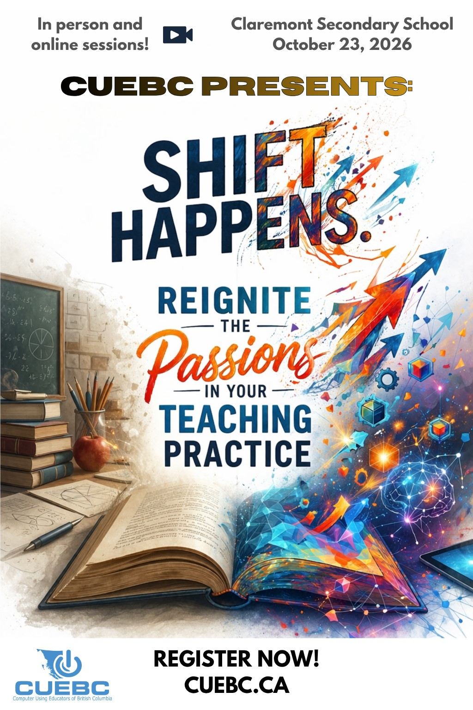

WORKSHOPDelivery to be confirmed
AI in Middle School
Tara Baird
AI · Instructional strategies
Intermediate · SecondaryView workshop ↗
A day of ideas, connection and practical possibilities for your teaching.

Attend in Saanich or join online. Workshop delivery includes in-person, hybrid and online sessions.
View ticket optionsKeynote, three workshop blocks, lunch and AGM, then farewell and door prizes.
See the day at a glanceYour confirmation, receipt and conference information are together in My CUEBC.
Open My CUEBCTara Baird
AI · Instructional strategies
Victoria Woelders
Multimedia · Inclusive design
Steve Roy
AI · Assessment
Kent Lui
AI · Assessment